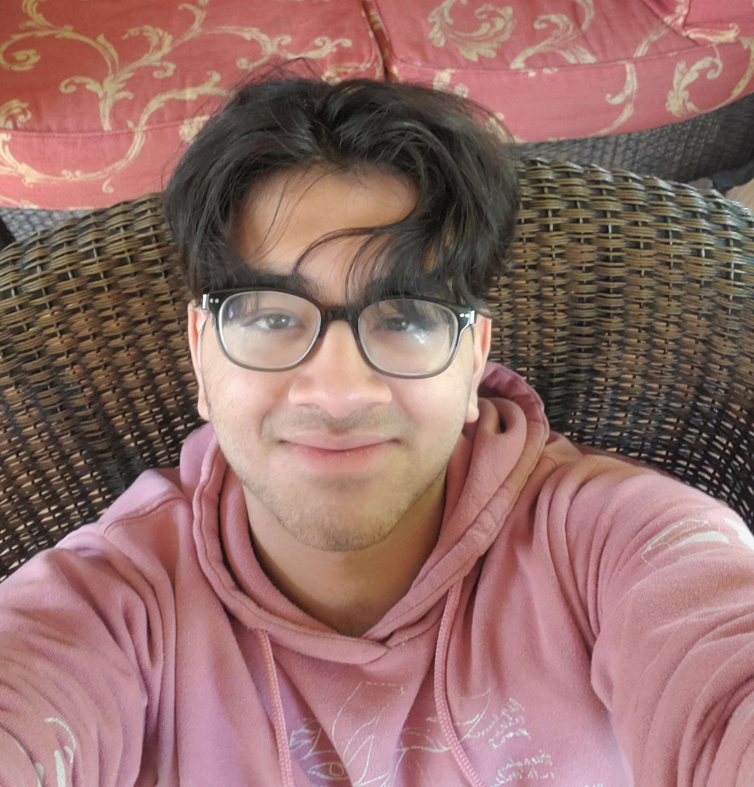
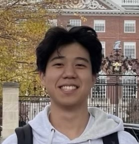

About Us
We are a group of passionate students that seeks to share our experiences in competition math. Minnesota is still a relatively under-resourced state in competitive math education, having significantly less participation in state and national competitions. Gaining experience in competition math is a great way to open the door to future STEM career paths. We hope to inspire more students to excel at competition math and make new connections along the way.
Founder
Angie Huang
Angie has been involved in competition math since 5th grade, having participated in a variety of math competitions such as ARML, Math Prize for Girls, CMIMC, PUMAC, and Girls in Math at Yale. She is a captain of the Minnesota All-State Math Team. She placed 5th in MATHCOUNTS State and received an Honorable Mention on the USAJMO. She is a teacher at LIVE and coaches her local MATHCOUNTS team. Besides math, she enjoys congressional debate, piano, and tennis and considers herself to be a die-hard football fan.
Instructors
- 
Aarya Garimella
Aarya has been involved with competition math since 8th grade, and he has qualified for AIME. He is a captain for the Minnesota All-State Math Team, participating in competitions like ARML and CMIMC with the team. He also enjoys teaching at LIVE and coaching his local middle school's MATHCOUNTS team. When not partaking in math, Aarya can be found listening to music or playing chess (or doing both).
- 
Jinu Lee
Jinu (Jaden) has been involved in various math competitions such as ARML, SMT, HMMT, and MathCounts. He’s a Captain of the Minnesota All-State Math Team. Additionally, he competed in MathCounts Nationals with Team MN in 2021 and has qualified for the AIME several times. Outside of math, Jinu enjoys volunteering, computer science, speech, debate, and cello.

Sneha Kundu
Sneha has participated in an immense number of competitions ranging from MathCounts to ARML. She qualified for MathCounts Nationals from Minnesota for 2 years and placed Top 56 at Nationals in her 2nd year. She has also qualified for the AIME. She enjoys teaching at LIVE. Apart from math, she enjoys various science extracurriculars and playing the cello.
Aarya Garimella
Aarya has been involved with competition math since 8th grade, and he has qualified for AIME. He is a captain for the Minnesota All-State Math Team, participating in competitions like ARML and CMIMC with the team. He also enjoys teaching at LIVE and coaching his local middle school's MATHCOUNTS team. When not partaking in math, Aarya can be found listening to music or playing chess (or doing both).
Jinu Lee
Jinu (Jaden) has been involved in various math competitions such as ARML, SMT, HMMT, and MathCounts. He’s a Captain of the Minnesota All-State Math Team. Additionally, he competed in MathCounts Nationals with Team MN in 2021 and has qualified for the AIME several times. Outside of math, Jinu enjoys volunteering, computer science, speech, debate, and cello.
Sneha Kundu
Sneha has participated in an immense number of competitions ranging from MathCounts to ARML. She qualified for MathCounts Nationals from Minnesota for 2 years and placed Top 56 at Nationals in her 2nd year. She has also qualified for the AIME. She enjoys teaching at LIVE. Apart from math, she enjoys various science extracurriculars and playing the cello.